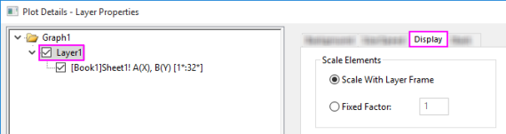
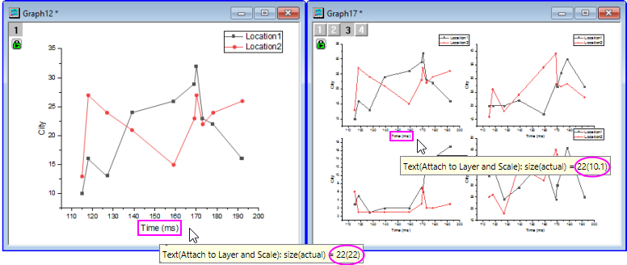
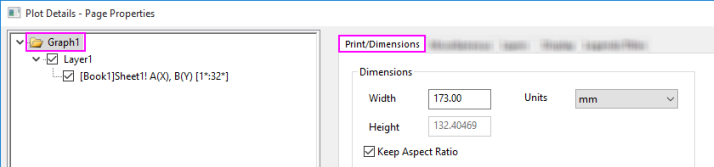
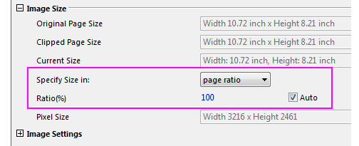

FAQ-441 Wie kann ich Diagramme mit exakter vom Herausgeber festgelegter Größe und Auflösung exportieren?
Set-ExpGraph-Size-Resolution
Letztes Update: 08.01.2019
Wenn Sie Grafiken als Bilddateien exportieren, um Sie in naturwissenschaftlichen oder ingenieurwissenschaftlichen Publikationen zu veröffentlichen, denken Sie Folgendes:
Finden Sie als Erstes heraus, was der Herausgeber genau wünscht.
Ein schnelles Durchsehen von beliebten Zeitschriften offenbart eine Vielfalt von Anforderungen. Während es zwar manche vorziehen, dass die Bilder bei der ersten Einsendung in MS Word-Dokumente eingebettet sind, bitten die meisten darum, dass Bilddateien für die Veröffentlichung separat eingesendet werden. Daher müssen Sie bestimmen, welche Exportformate und -größen für Ihre Zeitschrift akzeptabel sind.
-
- Wenn Sie Rasterbilder (z. B. TIFF, JPEG) einsenden, müssen Sie die Anforderungen der Zeitschrift in Bezug auf Format und Auflösung/DPI kennen.
- Bei Vektorbildern (z. B. PDF, EPS) sind die Bildabmessungen und die Auflösung/DPI nicht so wichtig, da Vektorbilder unendlich neu skalierbar sind.
- Prüfen Sie die Voraussetzungen für Schriftart und Schriftgröße, da viele Zeitschriften spezifische Anforderungen für Text innerhalb von Abbildungen haben.
- Prüfen Sie Linienstärke der Achsen, Anmerkungen etc., da einige Zeitschriften minimale Linienstärken festlegen.
Wenn Sie die Anforderungen an das Bildformat, die Bildabmessung und Auflösung, die Schrift und Linienstärke etc. bestimmt haben, empfehlen wir, dass Sie dieser allgemeinen Vorgehensweise zum Vorbereiten Ihrer Grafik für die Veröffentlichung folgen:
-
Skalierungsfaktoren festlegen: Der Diagrammlayer ist eine selbständige Einheit, die aus einem Satz Achsen und einem oder mehreren Diagrammen besteht, mitsamt zugehöriger Legendenobjekte, Textobjekte etc. Wenn Sie die Größe eines Diagrammlayers entweder (a) durch Ziehen an den Größenelementen auf dem Layerrahmen oder (b) durch Ändern der Layerdimensionen im Dialog Details Zeichnung ändern, können Sie die Größe proportional zu Achsentiteln, Hilfsstrichsbeschriftungen, Legende und Textobjekte ändern.
- 
Zu diesem Zeitpunkt kennen Sie die Größe Ihrer Textbeschriftungen nicht mehr, es sei denn Sie fahren mit der Maus über eine ausgewählte Beschriftung. Die folgende Abbildung zeigt den Effekt dieser Größenveränderung auf die Schriftgröße. Das Diagramm auf der linken Seite wurde mit drei ähnlichen Zeichnungen zusammengefügt, um das Diagramm mit den 4 Feldern auf der rechten Seite zu erzeugen. Während der Operation wurde die Textobjekte proportional skaliert. Sie können sehen, dass der Titel der X-Achse des ursprünglichen Diagramms auf der linken Seite eine tatsächliche Schriftgröße von 22 anzeigt, während der gleiche Achsentitel im zusammengefügten Diagramm auf der rechten Seite zeigt, dass die tatsächliche Schriftgröße nach dem Zusammenfügen und Neuskalieren jetzt 10,1 beträgt .
- 
Die unterschiedlichen Schriftgrößen treten auf, wenn Sie eine Textbeschriftung erstellen und dann die Liste Schriftgröße auf der Symbolleiste Format verwenden, um die Größe eines ausgewählten Teils der Textbeschriftung ändern. Die Linienstärken werden ebenfalls von der Skalierung beeinflusst. Dies müssen Sie beachten, da einige Zeitschriften minimale Linienstärken für Abbildungen festlegen. Mit den Unterschieden bei Schriftgröße und Linienstärke können Sie umgehen, indem Sie zunächst Ihre Grafik aktivieren, dann Grafik: Skalierungsfaktoren festlegen und den Faktor 1 wählen (das Wählen von 1 minimiert die Verzerrung und ergibt im Allgemeinen das beste Ergebnis). Dies setzt die Schriftgröße und die Linienstärken zurück, so dass sie korrekt durch die Listen Schriftgröße und Linien-/Rahmenbreite auf den Symbolleisten Format und Stil angegeben werden.
-
Seitengröße festlegen: Hier nehmen Sie die Breitenabmessungen, die von der Zeitschrift gefordert sind, und setzen die Diagrammseitengröße mit Hilfe der Gruppeneinstellungen Dimensionen auf der Registerkarte Drucken/Druckbereich des Dialogs Details Zeichnung (Format: Seite). Beachten Sie, dass Sie die Breite und Höhe unabhängig voneinander festlegen können. Sie können aber auch die Breite festlegen und das Kontrollkästchen Seitenverhältnis beibehalten aktivieren.
- 
- Schriftgröße anpassen: Nachdem Sie in Schritt 1 Ihre Schriftgrößen zurückgesetzt haben, können Sie jetzt bei Bedarf die Schriftgrößen in Ihrer Grafik modifizieren, um den Anforderungen Ihrer Zeitschrift an die minimale und maximale Schriftgröße zu entsprechen. Vergessen Sie auch nicht, die Anforderungen an die Schriftgestalt (engl. Font Face, z. b. Serif vs. Sans-Serif) zu überprüfen.
- Layer an Seite anpassen: In Schritt 2 legen Sie die Zielgröße für die Diagrammseite fest. Es kann aber sein, dass Sie etwas von der weißen Fläche um Ihr Diagramm herum entfernen müssen. Aktivieren Sie das Diagrammfenster und wählen Sie dann Layer an Seite anpassen. Geben Sie im aufgerufenen Dialog einen Rand ein (5 % ist ein guter Start) und aktivieren Sie, falls gewünscht, das Kontrollkästchen Layerseitenverhältnis beibehalten.
-
Mit 100 % Seitengröße exportieren: Wählen Sie bei aktiver Grafik Datei: Grafiken exportieren und öffnen Sie den Dialog Grafiken exportieren.
- Wählen Sie Ihren Bildtyp.
- Setzen Sie unter Exporteinstellungen die Option Randeinstellungen auf Seite.
- Legen Sie unter Bildgröße die Option unter Größe angeben in auf Seitenverhältnis und übernehmen Sie die Standardvorgabe von 100 %.
- 
- Wenn Sie einen Rasterbildtyp gewählt haben, legen Sie Ihre angestrebte DPI-Auflösung fest.
- Wählen Sie monochrom, graustufig bzw. farbig.
Wenn Sie fertig sind, können Sie die Vorschau anzeigen. Klicken Sie dann auf OK, um Ihre Grafik zu exportieren.
Schlüsselwörter:Journal, Breite, Höhe, DPI, Festplatte, PDF, EPS, JPEG, TIFF, groß, Datei, 600, 1200, Layer an Seite anpassen, Skalierungsfaktoren festlegen, Raster, Vektor, Seitenverhältnis